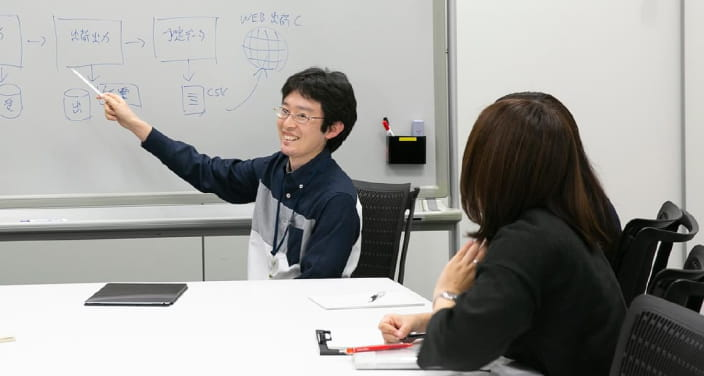

ENTRYご応募はこちら
職種紹介
ヤマトシステム開発では、マーケティング、営業職、技術職である開発・運用・インフラの各職種があります。
技術職はさらに細かく業務内容が変わってきます。
ここでは、各職種の仕事内容や、技術職の詳細についてご紹介します。
プロジェクトの進め方
商談開始から受注、納品まで、各職種が連携しながら仕事を進めていきます。

-
マーケティング・営業
各ソリューションのエキスパートとして
お客さまとスタッフを結ぶヤマトシステム開発のマーケティング・営業職は、さまざまな業種・業態、規模のお客さまが持つITニーズをいち早く正確に捉え、市場動向やユーザーニーズなどをミックスしながら企画提案を行います。お客さま企業との信頼関係を構築しながら、自らがフロントに立ってお客さまと自社の開発・運用スタッフを結び、プロジェクトを成功へと導く役割を担っています。
-
システム開発
ユーザー系と独立系、
2つのSIerの側面を
持つシステム開発ヤマトシステム開発のシステム開発職は、ヤマトグループのIT導入を担うユーザー系SIerと、ヤマトグループ以外のさまざまなクライアントからの受託開発を進める独立系SIerの、両面の特徴を持ちます。業務アプリケーションの開発エンジニアも、いずれかのチームに所属。途中でチームを異動することもあり、両方の経験で培った「お客さま目線」と「先進性」のバランスは当社エンジニアの最大の武器になります。
 -
システム運用
システムのパフォーマンスを引き出す
クリエイティブな運用設計ヤマトシステム開発のシステム運用エンジニアは、システムのパフォーマンスをいっそう引き出すための運用の改善活動や、省力化・自動化を進めるミドルウェア類の導入、クライアント個々のニーズや状況にフィットした運用手順を、オーダーメードに設計します。技術的に新たな取り組みとなることが多く、高度な運用技術を活かして、お客さまのシステム運用業務自体を請け負うケースもあります。
-
インフラ運用
最先端のインフラ技術で
世の中を変えるITを創造ヤマトシステム開発のインフラ運用のエンジニアは、サーバ、ネットワーク、セキュリティ等の技術を極めつつ、自由度の高く堅牢なプラットフォームを提供します。こうした仕事が膨大な宅急便のトレース情報を扱う基幹システムの構築や、数万台レベルの情報端末をシンクライアント化し、先見的なテレワーク導入を成功させるなど、当社の特色の一つを支えています。
技術職の職種ごとの業務
一口に技術職（SE）といっても、関わる領域によって、業務内容はさまざまです。
ここでは、職種ごとにどのような業務に携わるのか、ちょっと専門的な仕事内容を紹介します。
システム構築
稼働 サービス開始
運営・維持
ITアーキテクト
組織の情報戦略に基づいて、ITシステム全体のアーキテクチャを設計。システムの要素となり得るさまざまな技術・製品から、ビジネス上の要求と技術・製品の将来性、利用者側の使いこなし能力などを加味して、最適な組み合わせを選び出します。
-
アプリケーション
アーキテクチャビジネスおよびIT上の課題を分析し、機能要件として再構成します。機能属性、仕様を明らかにし、アプリケーションアーキテクチャ（アプリケーションコンポーネント構造、論理データ構造等）を設計。設計したアーキテクチャがビジネスおよびIT上の課題に対するソリューションを構成することを確認するとともに、後続の開発、導入が可能であることを確認します。
-
インテグレーション
アーキテクチャ全体最適の観点から、異種あるいは複数の情報システム間の統合および連携要求を分析し、統合および連携要件として再構成します。統合および連携仕様を明らかにし、インテグレーションアーキテクチャ（フレームワーク構造およびインタオペラビリティ）を設計。設計したアーキテクチャが統合および連携要求を満たすことを確認するとともに、後続の開発、導入が可能であることを確認します。
-
インフラストラクチャ
アーキテクチャビジネスおよびIT上の課題を分析し、システム基盤要件として再構成します。システム属性、仕様を明らかにし、インフラストラクチャアーキテクチャ（システムマネジメント、セキュリティ、ネットワーク、プラットフォーム等）を設計。設計したアーキテクチャがビジネスおよびIT上の課題に対するソリューションを構成することを確認するとともに、後続の開発、導入が可能であることを確認します。
テクニカルセールス
技術職として培ってきたIT・デジタル関連の技術や知識を営業分野でも活かすことができます。顧客への専門的・技術的な観点から提案を行い、顧客の課題をITで解決します。
ITスペシャリスト
プラットフォームやセキュリティ、ネットワーク、データベースなどの専門技術を活用して、システム基盤の設計・構築・導入を手がけます。
-
プラットフォーム
ソリューションの基盤となるシステムプラットフォームの設計、構築および導入を行います。ここでのプラットフォームとは、ハードウェア、オペレーティングシステムや関連するシステムソフトウェアおよびミドルウェアであり、システム開発、アプリケーション開発の前提となる基盤システムです。
-
ネットワーク
ネットワークの構成要素、ネットワーク網、キャパシティ、障害回避手段などの設計、構築および導入を行います。
-
データベース
データベースの論理設計、物理設計、回復管理などの設計、構築および導入を行います。
-
アプリケーション
共通基盤システムにあったソフトウェアアーキテクチャやフレームワーク、および、共通ライブラリの設計、実装を行います。また導入したライブラリの管理、ソフトウェアの品質管理、開発環境の決定、アプリケーションの開発ツールの作成、導入も担います。
-
運用設計
ハードウェア、ソフトウェア、アプリケーションを含めたシステム運用、管理の設計、構築および導入を行います。
-
セキュリティ
データベースの論理設計、物理設計、回復管理などの設計、構築および導入を行います。
-
応用ソフト
業務パッケージ（ERP、CRMなどを含む）、オフィススイートなど、特定の目的または領域で、情報システムを利用した業務改革、ビジネスプロセス改善および作業の効率化などを支援するソフトウェアに関する設計、開発および技術支援を行います。
プロダクトスペシャリスト
業務上の課題解決に関わるアプリケーションの設計、開発、構築、導入、テストおよび保守を実施します。
-
業務システム
業務に関するお客さまの要望を分析し、業務システムの設計、開発、運用、保守を行います。IT投資局面における活動領域では、当該業務ソリューションに関する以下の作業を実施します。
開発
①アプリケーションコンポーネントの分析、設計
②アプリケーションコンポーネントの開発、実装、テスト運用、保守
①アプリケーションコンポーネントの運用
②アプリケーションコンポーネントの保守 -
業務パッケージ
適用業務パッケージの機能とそのポータビリティーを十分に理解した上で、業務に関するお客さまの要望を把握し、パッケージのカスタマイズ、機能追加、導入および保守を行います。IT投資局面における活動領域では、当該業務パッケージに関する以下の作業を実施します。
開発
①詳細フィット＆ギャップ分析設計
②要求仕様に合わせたカスタマイズ設計（追加機能設計を含む）
③追加機能開発（カスタマイズで実現出来ない部分の追加開発）
④パッケージコンポーネントの実装、テスト運用、保守
①パッケージコンポーネントの運用
②パッケージコンポーネントの保守
プロジェクトマネジメント
システム開発において予定された期限内に予算金額内で、お客さまが希望するレベルの技術成果をあげ、品質を保持した状態でシステムを稼動させます。
-
システム開発
ITシステムの提案、開発、保守に関わるプロジェクトマネジメントを行います（ITシステムとして要求される機能を実現するためのソフトウェアを開発し、コンピュータおよびネットワーク環境を構築。インターネットテクノロジーを使用したものを含みます）。
-
ITアウトソーシング
お客さまの経営戦略を受けて、外部組織としてITシステムの企画、構築、保守、システム運用、サポート運用、業務運用に関わるプロジェクトマネジメントを行います。
-
ネットワーク
サービスデータ（LAN/WAN）、画像、映像等の通信環境の設計、導入および管理に関わるプロジェクトマネジメントを行います。
-
ソフトウェア
製品開発不特定多数のお客さまを対象としたソフトウェア製品の企画、設計、開発、改良および保守に関わるプロジェクトマネジメントを行います。
カスタマーサービス
ハードウェア、ソフトウェア、施設に関連する専門技術を活用し、お客さまの設備に合致したハードウェアの導入、ソフトウェアの導入、カスタマイズ、保守および修理を実施します。
-
ハードウェア
導入済あるいは導入予定のコンピュータ、関連機器について、その安定稼働を目的に、導入、据付、構成管理、正常な機能維持、機能拡張、障害修復を速やかに行うとともに、操作指導やお客さまへの改善提案を行います。
-
ソフトウェア
導入済あるいは導入予定のコンピュータプログラムおよびソフトウェア製品について、安定稼働を目的に、導入・配信、セットアップ、正常な機能維持、機能拡張、構成変更、障害修復および操作指導等を行うとともに、お客さまへの改善提案等を行います。
-
ファシリティ
マネジメントコンピュータシステムおよびネットワークの施設インフラについて、設計、構築の管理および運営を行います。
ITサービスマネージャー
ITサービスの提供に際し、情報システムの安定稼働や日々の継続的改善、障害発生時の迅速な復旧対応、サービスレベル管理などシステム運用において安全性と信頼性の高いサービスの提供に責任を持つ。